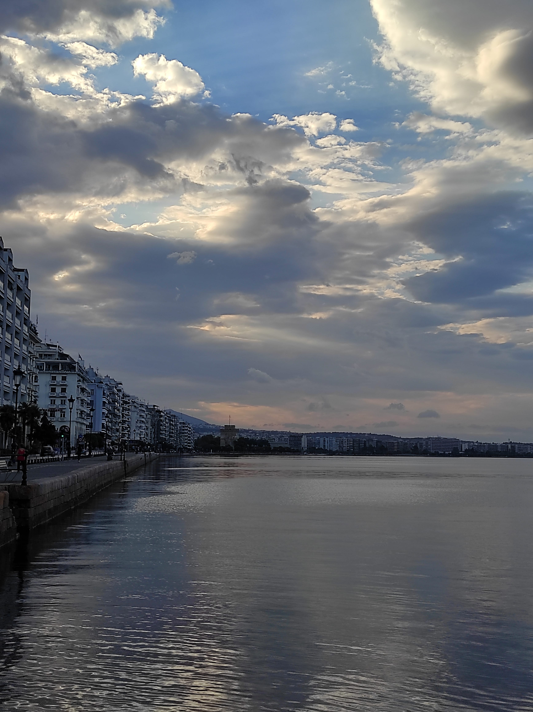

N’oublions pas l'île de Mykonos, célèbre pour son ambiance estivale. De nombreux DJ, connus dans le monde entier, viennent animer l'île dans de nombreux bars de plage. L'idéal pour les fans de la fête.
De nombreuses villes, ou bien îles, comme Oia, Thessalonique ou bien Kos offrent une richesse en ruines antiques et en paysages éblouissants.
Pendant votre séjour, vous serez amené à goûter
les spécialités grecques. Vous pourrez découvrir la traditionnelle moussaka, composée d'aubergines grillées, d'oignons et de tomates. Pour les plus gourmands, un dessert, connu sous le nom de baklava
: aux noix et aux amendes.
|

|